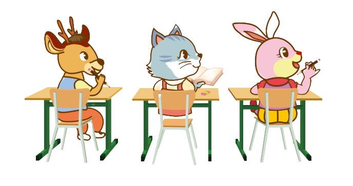

Freshman Q&A:
- Q:當孩子適應不良時怎麼辦 A:老師們會用心傾聽並協助其解決問題，必要時會和家長聯繫
- Q:去補習班時要不要帶棉被枕頭 A:枕頭可以，但為了讓孩子們適應國小生活，我們會讓牠們習慣趴著睡
- Q:同學欺負我時我不敢講，怎麼辦? A:在教室中幾乎每間都有監視器，而且我們十分要求常規，會盡可能避免
- Q:孩子在家玩遊戲到不想去上課，怎麼辦? A:可以稍微勸勸看孩子，及講講道哩，再不行就拿出獎懲手段
- Q:孩子挑食，怎麼辦? A:在班上，我們會讓孩子，一點一點嘗試新食物，用意銜接國小
